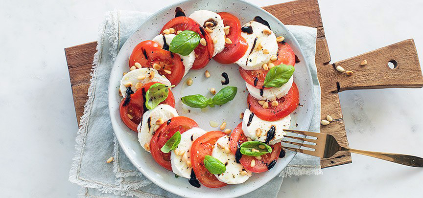

Tomaat mozarella

Ingredienten
- 2 vleestomaaten
- 180 gr mozzarella
- 1 rode ui
- 6 cl olijfolie
- 1 el pijnboompitten
- verse basilicumblaadjes
Bereiding
- Snij de tomaten en de mozzarella in dunne plakjes. Snij de ui in dunne ringen leg dakpansgewijs steeds een plakje tomaat, een plakje mozzarella en een uiringetje in een cirkel op een bord. Bestrooi ze met peper en zout en besprenkel ze met olijfolie. Rooster de pijnboompitten in een droge koekenpan. Bestrooi het geheel tenslotte met de basilicum en pijnboompitten.Lekker bijgerechtje!(lekker met hartelijke pannekoekjes)